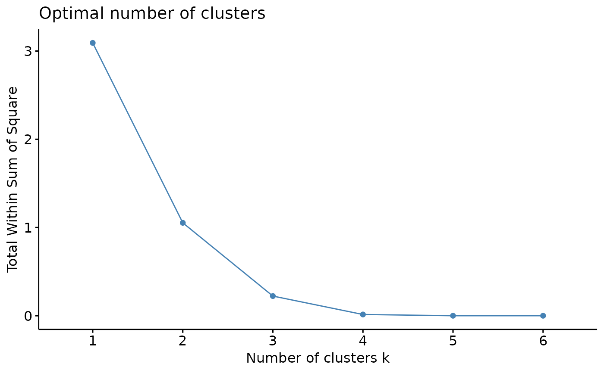

To help decide the number of cluster, three different methods are provided: total within cluster sum of squares, average silhouette coefficient, and gap statistics.
k_select( result, method = "wss", clust.method = "kmeans", n = 10, proportional = TRUE )
Arguments
| result | A |
|---|---|
| method | A single character string indicating which statistic to use for plot. Options are "wss" (total within cluster sum of squares), "silhouette" (average silhouette coefficient), and "gap_stat" (gap statistic). Default is "wss". |
| clust.method | A character string indicating clustering method. Options are "kmeans" (default), "hclust" (hierarchical clustering), "hkmeans", "pam", and "clara". |
| n | An integer indicating maximum number of clusters to test. Default is 10. |
| proportional | Logical, indicating if proportional exposure (default) will be used for clustering. |
Value
A ggplot object.
See also
Examples
#Plot average silhouette coefficient against number of clusters k_select(res_annot, method = "silhouette", n = 6)#Plot gap statistics against number of clusters k_select(res_annot, method = "gap_stat", n = 6)